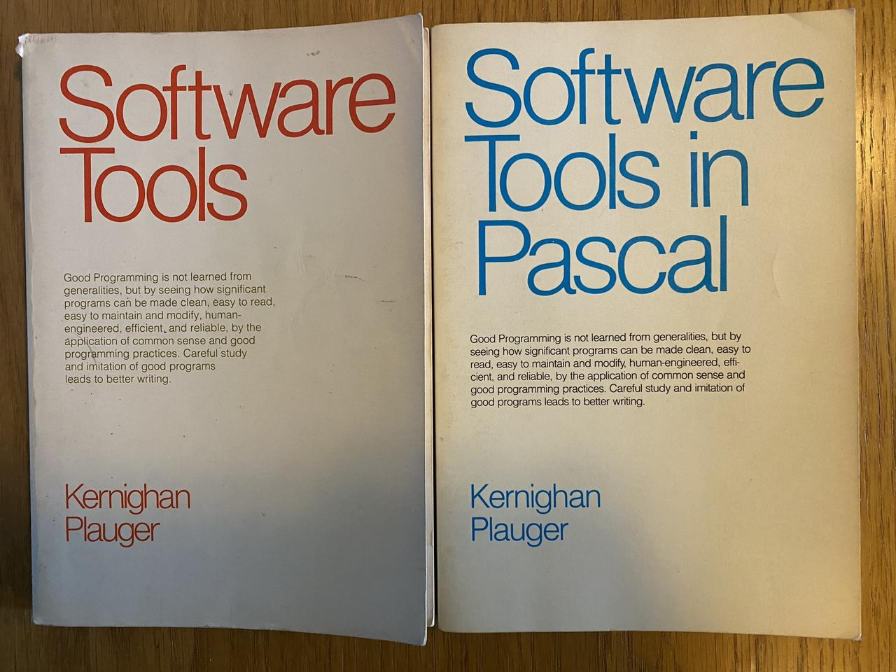

One of the things I've always found interesting about the LBL Software
Tools VOS was how its source files were structured. I'll include here
page 10 of the release notes from the release on the DECUS LT86 tape:
Release Notes
Source File Structure
The source code for `tool' is contained in a file [...SRC]tool.tcs
(if the tool is portable across operating systems) or
[...VMS]tool.tcs (if it is an VMS-specific tool). This TCS source
file contains an edit history of all changes made to the source. The
output of the `get' utility operating on a `.tcs' file results in a
file (tool.w) which is all of the environment necessary to rebuild
the tool, provided that the VOS is operational. The tool.w file is
an archive containing:
1. All of the files "included" by the ratfor source code.
2. The ratfor source file, tool.r.
3. The format input for the manual entry, tool.fmt.
4. And optionally, any extra definition files needed to build
alternate versions of the tool (eg. sh => hsh).
As an example, suppose that you wish to change the subroutine
"module" in "tool". The suggested scenario is as follows:
$ !Fetch the file tool.tcs from the appropriate directory in the container
$ !file on tape into st_src
$ hsh
% get ~src/tool.tcs tool.w
% ar xv tool.w
% ar xv tool.r module
% ed module
(make changes and write file)
% ar uv tool.r module
% rc -v tool.r
% (test out new tool. repeat last three steps until satisfied.)
% ed tool.fmt
(modify writeup to reflect changes)
% ar uv tool.w tool.r tool.fmt
% cp tool.exe ~usr/tool.exe
% delta tool.w ~src/tool.tcs
(Identify in the comments the reason for the changes,
and which modules changed.)
% format tool.fmt >tool
% ar uv ~man/s1 tool
% asam <~man/s1 | sort >~man/i1
Placing tool.exe in ~usr causes the shell to find your modified
version of "tool" rather than the distributed one. The last two
commands above cause the manual entry for `tool' to correctly
correspond to the utility itself.
-10-
(It should be % get ~src/tool.tcs >tool.w with a “>”
before tool.w in the above procedure. Otherwise the contents
are echoed to the terminal instead of being written to tool.w.)
So, all the source files (source code and documentation) are stored
in an archive file, which contains another archive file that has just
the ratfor source, from which you extract the modules you want to work
on, and at the end update the archives in the reverse order! This
made organizing all the source much simpler, especially considering
some of the porting targets for this software didn't have hierarchical
directory structures, only flat directories. So when moving around
parts of the system, like when you were preparing the distribution,
you normally only dealt with the top level archives, the .TCS
files, and only worked directly with the files that were contained
within that archive and its child archives if you had to make a change
to the source files. Very clever!
When I was in college in the 1980s the school I was at used Digital
Equipment Corporation VAXes running VMS, and didn't have any Unix
machines. I was quite interested in Unix and the Unix philosophy, but
was frustrated by my lack of access to Unix machines. However,
Brian W. Kernighan and P. J. Plauger wrote a couple of books about
writing tools in the Unix style: Software Tools was in
published in 1976 and used Fortran as its portable implementation
language, while Software Tools in Pascal was published in
1981 and used Pascal.

Here is a quote repeated on each book's cover:
Good Programming is not learned from generalities, but by seeing
how significant programs can be made clean, easy to read, easy to
maintain and modify, human-engineered, efficient, and reliable, by
the application of common sense and good programming practices.
Careful study and imitation of good programs leads to better
writing.
Both books worked through writing software tools that were simpler but
still useful versions of many of the standard Unix tools.
I got Software Tools in Pascal because I knew Pascal better
than Fortran and worked through implementing each of the programs on
the college's VAX, which taught me a lot about programming and was
significant influence on me. I later got Software Tools
because I wanted to read the section on implementing the ratfor
processor which that book used to add additional control structures
unavailable in the Fortran of the day.
I was not the only person who was influenced by these books.
Deborah K. Scherrer, Dennis E. Hall, and Joseph S. Sventek at Lawrence
Berkeley National Laboratory with help from others greatly expanded
the set of programs from the book into an entire Virtual Operating
System (VOS), and founded the Software Tools Users Group in 1976
to distribute it, eventually leading to ports on over 50 operating
systems.
Luckily for me VAX/VMS was one of those operating systems, and the
port appeared on various tapes distributed by DECUS, the Digital
Equipment Computer Users' Society. Luckily MPL Corporation, where I
worked at the time, always got the DECUS tapes and had a Fortran
compiler, so I could install it there. I found it a very useful and
usable computing environment.
Anyway, I retain a fondness for that software, known variously as
LBLTOOLS, LBL SWTOOLS, and LBL VOS, and have begun using the version
from the DECUS VAX Languages & Tools SIG tape from 1986
again on the (emulated) VAX I maintain at work. This gave me the
opportunity create a PDF with the documentation
for that version, which I'm making available here for the curious.
“I really enjoyed that book. The first computer book I read where
I thought my world was larger after reading it.” — C. Paul Bond
Fantastic Medieval Campaigns (FMC) by Marcia B. is a great
retroclone and restatement of Original D&D: it's clearly written, well
organized, contains a table of contents for the book and then a table
of contents in each section, has a glossary and indices for monsters,
spells, and tables, and uses the color backgrounds of the pages well
to make finding the different sections easy. The art is charming and
appropriate for a OD&D retroclone, and the layout is clean. It
includes a retroclone of Chainmail, which is rare. I like it very
much. And the PDF is free! I got the hardback color book and read it
and want to run at least two campaigns with it, the first using its
Chainmail retroclone, “Chain of Command”, and the next with the d20
based combat system.
But, but, but! The back cover text says “problematize our
preconceptions of a text (or even a whole genre)” and mentions
“falsehood”. And the contents of the last page of the text,
which is labeled “This Page Intentionally Left Blank.”, are certainly
not blank, and expresses opinions of D&D that must surely
offend many D&D players. I'll quote it here:
Fantastic Medieval Campaigns is a recreation of what is at best a
deeply reactionary work of art—if not a fascist one altogether.
We recognize now that the authors, as well as some who were in
their circle, thought quite badly of women, indigenous people, and
others. However, we should let the text speak for itself because
it speaks loudly. The book is a guide to fantastic war game
campaigns, where the players take on the roles of
sword-and-sorcery adventurers seeking greatness. They will begin
in the Underworld simply slaying monsters and retrieving treasure
in the form of gold, legal tender ready to be exchanged on the
open market. As characters accumulate treasure, they acquire
superhuman abilities and political power to boot. Heroes,
Thaumaturgists, and Bishops emerge from their colonial katabasis
conquering land by which to become Lords, Wizards, and Patriarchs.
They will establish sanctuaries and, with their vast armies, turn
the tide against the forces of evil chaos they have always
‘resisted' thus far. The setting in general is one where might
makes right, where the violent extraction of resources is central
to the protagonists activity, and where participation in these
things is rewarded with not only political power bu the sort of
physiological and supernatural power which colonizers and fascists
imagined themselves to have. It is a mirror to the desires and
fantasies of its original authors, a bunch of white, straight,
cissexual men in the Midwest, just as it is a reflection of boys'
pulp literature at the height of American culture about crushing
one's enemies and driving them before oneself and hearing the
lamentations of their women. All in all, this work was not
written in a vacuum nor did it spring fully formed from the heads
of its creators. You can use this book however you like or even
attempt to play it with the mindset of a midcentury American man,
but do not delude yourself with regards to its content or to the
fantasy which it encodes. That being said, as the author, I offer
up this work for analysis, critique, and reflection.
Well, that certainly put the coyote in the chicken house! It is
definitely controversial in OSR circles. Honestly, though, I'm not
sure that furor was worth following.
I just want to point out that, whatever the author's opinions of D&D,
they wrote FMC so they could more easily understand the rules, so
they could better play D&D with their friends, and according to a
friend of theirs they spent over a year working on it.
Regardless of whether I agree with their views or not, FMC is a well
written game and its author should be proud of it. It can be used to
run some great games. If you don't agree with the author's views, just
ignore them and play the game.
[I should have posted this a long time ago. Oh well. At least it's
being posted now.]
Back in the Day
I really wish I'd gotten a copy of Steve Jackson's Melee in 1977 and
Wizard in 1978 when they were published by Metagaming, and Advanced
Melee, Advanced Wizard, and In the Labyrinth when those came out in
1980. Together those make up the game The Fantasy Trip (TFT). Melee and
Wizard are the basic combat and magic rules, published as board games.
Advanced Melee and Advanced Wizard are the full combat rules. And In the
Labyrinth adds all the other stuff necessary for a complete roleplaying
game.
But I never saw them in any store in my area. I did meet one person who
played The Fantasy Trip, probably in 1981 or so, but never got to talk
to him about it; we were both quite busy with other things at the summer
camp from hell. Wish he'd brought his rulebooks…
I picked up my copies of the original Advanced Melee, Advanced Wizard,
and In the Labyrinth much more recently. Probably in 2018 or so. Thank
goodness for Internet game stores.
In 2018 Steve Jackson Games kickstarted The Fantasy Trip Legacy Edition,
with new versions of Melee and Wizard and a new version of In the
Labyrinth that contained everything from the original as well as the
rules from Advanced Melee and Advanced Wizard, and I backed it, and got
a LOT of stuff. I liked the new edition of The Fantasy Trip a lot. But I
didn't have a good chance to play it for a while.
There were some interesting changes from the Metagaming version of The
Fantasy Trip to the Legacy edition.
I got to play Melee online in 2023 and had fun. It took a while for
everybody to get used to the way combat works — it's a hex-based
tactical combat system that strives for verisimilitude, and is quite
different from anything that the others were used to. This group has
been playing Mini Six from Antipaladin Games mostly before this, with some
of Deep7's 1PGs thrown in; previously we've played a lot of Labyrinth
Lord from Goblinoid Games and Savage Worlds from Pinnacle Entertainment
Group, and while Savage Worlds is played on a square grid battle map,
it's still not tactical in the same way as TFT, DragonQuest from SPI, or
GURPS from Steve Jackson Games. I played a lot of DragonQuest and GURPS
(TFT's younger relative) in the 80s and 90s, which both have hex-grid
based tactical combat, and enjoyed them a lot, so TFT's system wasn't
such a shock to me.
Anyway, I backed Steve Jackson Games' TFT kickstarters as well as Gaming
Ballistic's kickstarters, so I've got a lot of the stuff published for
The Fantasy Trip Legacy Edition. It's a pity I'm not playing face to
face these days, because most of those kickstarters were loaded with
neat stuff for face to face play — megahex tiles, cards of all kinds,
neoprene battle maps, and more.
I continued playing Melee online, and added in Wizard. Eventually I
plan to start running a TFT campaign using the many adventures
released by Steve Jackson Games and Gaming Ballistic. And they've
released a number of solo adventures, so I plan on playing those as
well.
Right now I'm working on a hexcrawl using TFT, to be played somewhat
in the West Marches style, with a long past apocalypse that destroyed
a huge empire. The idea is the people are moving back into the areas
left abandoned for centuries after the apocalypse due to inimical
magic that has recently retreated.
Description of Melee
Melee is a person-to-person combat board game. A Melee character has two
stats, Strength (ST) and Dexterity (DX), and a secondary stat, Movement
Allowance (MA). ST determines what weapons you can use. DX determines
how hard it is for you to hit your opponents: you roll 3d6 equal to or
under your (adjusted) DX to hit (noted as a 3/DX roll). MA determines
how fast you can move on the hex grid battlemap. Human characters start
with 8 in ST and DX and have 8 more points to allocate however you want
between the two, for a total of 24 points. There are NO dump stats, and
every combination of stats, weapons, and armor results in quite
differently performing characters, which interact with the combat system
in interesting ways. Unarmored humans start with MA 10, but most armor
reduces a characters MA. Armor also lowers your DX. When you are
familiar with the system you and one or more friends can create
characters and fight a battle in an hour or so, but when you are first
starting out it will take a while to internalize the system so it runs
quickly. Melee also has various nonhuman opponents: bears, wolves, giant
snakes, giants, and gargoyles. It also has fantasy fighters: elves,
dwarves, halflings, orcs, goblins, and hobgoblins, who start with
different minimum ST and DX, sometimes with different maximum total
points. Characters gain experience and when they have 100 they can trade
it in for a point to increase ST or DX. Up to 8 points can be gained
this way.
Description of Wizard
Wizard adds a third stat, Intelligence (IQ), and a lot of
spells. You've still only got 8 points to spend between the three
stats, so characters can have 32 points total. Wizards can know as
many spells as they have IQ points. Spells are rated by the IQ
necessary to learn them. Wizards roll 3/DX to see if they've cast
their spells correctly. Each spell has a ST cost to cast; some spells
can be continued with a different ST cost. Typically if a wizard
fails the roll to cast the spell it still costs 1 ST. Wizard also adds
a couple more monsters, Myrmidons, and two sizes of dragon: 4 hex and 7
hex. Wizard is scaled well to work beside Melee as a person to person
combat board game.
Description of In the Labyrinth
In the Labyrinth (ITL) adds some elaborations to combat and magic, as
well as all the things necessary to make The Fantasy Trip a complete
roleplaying game. In particular, they add talents, non-magical
abilities. Talents allow a character to try to do something, or makes
something anybody can do easier. Talents are rated by the IQ necessary
to learn them, and by how many points IQ points they cost to get at
character creation. Talents cost twice as much (in IQ points at
character creation and in XP after character creation) for wizards as
they do regular “hero” characters. Regular heroes can learn spells, but
they cost triple (in IQ points at character creation and in XP after
character creation) what they cost wizards. ITL adds lots of spells,
many of which have non-combat uses, as you'd expect from an RPG.
Finding out if your character succeeds is a matter of rolling dice
equal to or lower than your stats. For easy things you roll 2 dice or
even 1 die, normal things take 3 dice, while difficult things take 4,
5, even or more dice! Look at the chance to roll a 14 or less on
6d6! Yikes!
Random things I like about TFT
Melee and Wizard are relatively simple person to person combat board
games that serve as an introduction to the full system.
Uses only six sided dice.
Tactical hex grid based combat with verisimilitude.
The RPG is a complete fantasy roleplaying game in one 176 page book.
ITL's one page Quick Character Generation lets you quickly roll up a
new character with interesting features and personality.
The Table of Jobs.
Creating Magic Items.
ITL's mini setting of the Village of Bendwyn and Southern Elyntia.
Characters, even complicated ones, fit on a 3×5 card.
It's got a free app, TFT Helper,
for iOS and Android!
All of the retro-clones and neo-clones mentioned below are games with
which I have some familiarity. Many of them I've played. The others
I've read. All of them have something interesting to recommend them.
And, of course, if you are playing with kids who might not have the
money to buy PDFs of old versions of D&D, many of the retro-clones are
available in PDF or online legally for free.
Want races separate from classes and the most of the extra classes,
races, and many spells from AD&D 1E, all on the 1 to 14 level scale of
the classic Basic/Expert D&D (B/X)? See Old-School Essentials
Advanced Fantasy.
Want something that feels like Original D&D, just before AD&D 1E
came out, with the races and classes (except for gnomes and
illusionists) and spells familiar from AD&D 1E, but simpler, on a
mostly 1 to 20+ level scale, with up to 9th level magic user
spells and 7th level cleric spells? See Swords & Wizardry
Complete.
Like the 1 to 14 level scale and the lower hit dice of Basic/Expert
D&D, but want more detailed rules, especially magic research,
economics, and domain play (the D&D end game, where the players build
strongholds and rule), with rules for building campaign specific
classes and races, and don't mind some slightly different mechanics?
See the Adventurer, Conqueror, King System.
I think I looked at Basic Fantasy first, but it wasn't what I
was looking for at the time.
All its PDFs are free, and the print on demand books are very
inexpensive.
I notice that the character class tables all go to
level 20. I wonder if this is a residual artifact of the D&D 3E
character classes going to level 20, since it doesn't match the B/X
model that that is implied by the Basic Fantasy website with the
statement “The Basic Fantasy Role-Playing Game is a rules-light game
system modeled on the classic RPG rules of the early 1980's.”
Compare that to Labyrinth Lord's rescaling of B/X to match
AD&D.
Labyrinth Lord
Original Edition Characters
Original Edition Characters is a player's supplement for Labyrinth
Lord that provides characters more like those of Original D&D.
(OECPDF, OECPOD)
While Labyrinth Lord: Revised Edition (LLRE; PDF and POD) has been
criticized for not being a completely faithful retro-clone of the
Moldvay/Cook/Marsh Basic/Expert D&D rules (B/X), I think it still
holds a useful spot. The changes that were made in the revised
version of Labyrinth Lord made it easier to be used with Advanced
Edition Companion (AEC). It adapted the 1–14 level scale of B/X to
the scale of AD&D 1E, generally about 20 levels, and with AEC it added
the separate races and the additional classes, spells, monsters, and
magic items of AD&D 1E.
Advanced Labyrinth Lord compiles the information from Labyrinth
Lord: Revised Edition and Advanced Edition Companion into one
convenient book (ALL, PDF and POD).
Swords & Wizardry
Swords & Wizardry is inspired by the original D&D booklets and
associated magazine articles. It comes in various versions, depending
on how much of the supplemental material you want.
I find the original D&D booklets very interesting from a historical
standpoint, but find Swords & Wizardry easier to use at the table.
Swords & Wizardry White Box
This is inspired by the original three booklets of D&D, so it includes
only the Fighter, Magic-User, and Cleric, so it strips away everything
but the absolute essentials.
Swords & Wizardry Core
This adds the thief class.
Swords & Wizardry Complete
If you are looking to play something with the feel of AD&D 1E, but
want something even simpler than Labyrinth Lord: Revised Edition
and Advanced Edition Companion, this is an excellent choice, as
long as you don't need half-orcs, gnomes or illusionists.
I like how it discusses different ways to interpret the original
rules, often giving more than option for use with S&WC.
Old-School Essentials
Old-School Essentials (OSE) is published by Necrotic Gnome in two
flavors so far, Classic Fantasy and Advanced Fantasy.
In my opinion, OSE has improved the clarity, organization, and
presentation of its rules over the already very good Basic/Expert
D&D rules.[1] As well as clear wording it uses layout and
typography to enhance its presentation of the rules, from the use of
one and two page spreads that completely cover one subject to the
careful use of bold and bullet points to call out important
information, OSE really shines. The adventures that Necrotic
Gnome have produced for it (The Hole in the Oak, Winter's
Daughter, The Incandescent Grottoes, The Isle of the Plangent
Mage, Halls of the Blood King, and Holy Mountain Shaker)
continue this excellent use of layout, bold, and bullet points to
present their information clearly and without the dreaded “wall of
text” or “read aloud text”.
Old-School Essentials Classic Fantasy
Old-School Essentials Classic Fantasy (OSECF) is the best organized
and presented version of the classic rules from the Moldvay/Cook/Marsh
Basic/Expert D&D sets. This is the game that I wish had been around
when I started playing. There is an SRD (OSESRD). I particularly
like the Classic Fantasy Rules Tome, which collects everything into
one substantial book, but there is also a version split into multiple
books covering separate sections of the rules, so that the magic-user
can look up his spells while the fighter is looking at the combat
rules.
Old-School Essentials Advanced Fantasy
Old-School Essentials Advanced Fantasy is the best organized and
presented version of the ideas of the classic rules from 1st edition AD&D, scaled to match the 1–14 level scope of the
Moldvay/Cook/Marsh Basic/Expert D&D sets. If I was starting a new
D&D campaign these are the rules I'd use, all things being equal.
The name of this system is usually abbreviated as ACKS. One of its
explicit design goals for to supply more rules for the end of game of
Original D&D, where the players built strongholds and ruled, hence the
name. It also has a more detailed economic system. It is more
complicated than OD&D or B/X, but in a completely different way than
AD&D 1E.
It uses some different mechanics, especially for “to hit” roles, so it
might be considered a Neo-Clone, but it is inspired by B/X D&D, and
keeps to the same 1 to 14 level scale of B/X. I particularly like its
rules for building your own campaign specific classes from the
Player's Companion.
OSRIC
I looked at OSRIC (OSRICKnK), (a free OSRIC PDF is available, as
well as a free PDF of the Usherwood PublishingOSRIC Pocket SRD
version) but was more interested in Basic/Expert D&D retroclones at
the time. I think it is a well written, organized, and presented
restatement of AD&D 1E. The Black Blade Publishing print edition
is a very nice offset printed volume with a sewn spine. The Usherwood
PublishingOSRIC Pocket SRD (PDF, POD) is quite affordable. I
just wish OSRIC wasn't missing some of the classes. (I miss the Monk
in particular.) I was also surprised by how many of the little quirks
and restrictions of AD&D 1E have been ironed out, although many
remain. Usherwood Publishing has some supplements that add some of
the missing classes, though I'm not sure I like all their versions.
This is a retro-clone of The D&D Rules Cyclopedia.
Dark Dungeons does have changes from the Rules Cyclopedia,
integrating some optional rules, extrapolating, clarifying and
adjusting other rules, and integrating rules for Immortals. It does
not include the Mystara setting and cosmology elements. The
monsters differ somewhat.
Delving Deeper
Delving Deeper (Delving Deeper Description, Delving Deeper
PDFs) works very hard to be as faithful to the 3 Little Brown Books
of Original D&D (along with the relevant partsof Chainmail, with which
they were intended to be used) as possible. The Delving Deeper V4
Reference Rules Compendium is a Print-on-Demand version of the three
booklets. There is also the Delving Deeper SRD. I was
particularly interested in Version 5 of Delving Deeper, as that
promised annotated versions of the three booklets, but only one of the
annotated versions has been completed so far.
Fantastic Medieval Campaigns
Fantastic Medieval Campaigns (FMC) is a retro-clone of the three
Little Brown Books of Original D&D and Chainmail, available for free
in PDF and in print on demand. I gather it was something the author
did just so they had something easier to follow when playing OD&D with
friends. I'm glad they made it available.
Unlike a lot of clones of OD&D, FMC, as well as including the familiar
d20-based combat system, also includes a clone of the Chainmail rules,
which can be used either for individual combat or mass combat. FMC is
very well organized, and could be used by someone new to D&D to
play in a group where everybody else is using the OD&D rulebooks, or
as the rules for a whole group.
Basically, FMC is a very well written and organized restatement of
Chainmail and the three LBB. The layout and design are uncluttered;
the art is charming, the organization is superb, and the writing is
clear. The physical book is an excellent example of the possibilities
of print-on-demand, with the different sections of the book printed on
different colored backgrounds, making finding specific sections much
easier. The table of the contents at the front of the book is
reasonably detailed, and each section has its own table of contents as
its first page, opposite the title page for the section. The book has
a glossary and indexes for monsters, spells, and tables.
In the end this is an exceptional restatement and clarification of the
original game.
Nothing I'm saying in this post is new; I'm sure other people have
pointed out these or similar things in the past. I'm just trying to
get my observation down in concrete form.
Someone asked why Old School
Essentials
(OSE) gets so much attention in the OSR world, and why Swords &
Wizardry
(S&W) doesn’t get more. I like both games very much, and have pledged
for Kickstarters for both systems, but I think that the reason that OSE
gets more attention, especially from from those new to the OSR, is that
OSE provides specific and explicit step by step procedures for running
the game structures that are at the center of the game.
In the article from 6 September 2019, Game Structures — Addendum:
System
Matters,
Justin Alexander talks about how the dungeon crawling structure that
originates in Original D&D is completely missing from D&D 5E. (The rest
of his series on Game
Structures
is also interesting.)
OSE preserves (as you’d expect as a faithful retroclone of the 1981
Moldvay/Cook/Marsh Basic/Expert edition of D&D) those procedures and
presents them clearly. Much of the same information is available in
Swords & Wizardry, but the reader has to synthesize most of it from
paragraphs and pages of text, rather than having a step by step
procedure to follow.
Old School Essentials.
Looking at OSE, there are at least 12 procedures, most of which have
explicit lists of steps. (Page numbers are to the OSE Classic Fantasy
Rules Tome.)
NPC Encounters, Adventuring
Parties, p. 212. While not numbered this is sequence of bullet listed procedures for generating Basic and Expert NPC parties, and High Level NPCs.
The fact that OSE has an online
SRD is also an
advantage; S&W used to, but it is not currently available.
Swords & Wizardry
Procedures
In Swords & Wizardry there are only a couple of step-by-step procedures.
Initiative and Order of Battle†, p. 35.
Generating a Random Treasure Hoard†, p. 131.
Swords & Wizardry’s other procedures have to be extracted from one or
more paragraphs of running text.
S&W tends to rely on examples and prose descriptions rather than
explicitly numbered or bulleted lists.
“Monsters in the Dungeon”, p. 76, could easily have been part of a
“Randomly Stoking the Dungeon” procedure.
Compare OSE's “Wilderness Adventuring” to S&W's “Wilderness
Adventures” on p. 80. The OSE version is an explicit list of steps,
while the S&W version is a wall of text.
Compare OSE‘s bulleted Morale procedure, p. 123, to S&W's, p. 39.
Compare OSE's “Rolling a Sentient Sword” to S&W's “Intelligent
Weapons”, p. 138.
I'm sure that the designer of S&W and its ardent players use
procedures much like OSE's to actually run the game published,
internalized as good practice from the original games over the users,
until they don't notice the lack of or more difficult presentation of
these procedures in S&W.
Much of the credit for OSE's procedures goes to Moldvay, Cook, and
Marsh, who designed the version of D&D it retroclones, but much also
goes to the exceptionally clear presentation of those rules by Gavin
Norman of Necrotic Gnome. The series
of OSE adventures also published by Necro Gnome have also been
excellently presented.
I have been pleased to see S&W's presentation improving over time (the
use of two page spreads for most of the class presentations in the
most recent S&W Revised was a great improvement), and I expect to see
the presentation continue to improve.
Well, I've not been entirely missing in action — I've been posting
on my other blog Lacking Natural Simplicity,
Another Take (and Geminicapsule) — but it's true my output has
been way, way down. Such are the vagaries of life, I suppose.
Anyway, I hope things will be picking up around here.
Strazin fights Gary from Accounting (who looks like a humanoid
dragon), his boss, on his first day at work! {This was just a
training exercise.} He defeats him in one blow! But Gary says “You
may have beaten me, but Cheryl from HR is the real challenge…” (Dun
dun dun!)
Gary sends us out after four criminal bosses: the Turtle does
protection, the Tiger does gambling, the Bird does illegal information
gathering and trading, and the Dragon does drugs.
We decide to go after the Bird later. We'd have go off planet to the
satellite controlling space station around the planet of the bird
people. On paper it is a telecommunication booster, but he uses it to
steal data. Anyway, he's the hardest to approach, and we need
somebody smart, which is not playing to either of our strengths.
We need to gather hard evidence of crimes, so they can be put away
for ever.
We decide to go after the Tiger. We are going to a casino with
associated brothel, Alpha Blue, under cover. We are offered a hit of
a mild (and legal) drug at registration.
{Drugs are not illegal unless really special: moon sugar, super
cocaine, etc. Crimes: illegal pit fighting where people die, contests
where people are expected to die, etc.}
Yin goes straight to the tables, and breaks even, then gets the
feeling there is a disturbance in the force.
Strazin gets a mental image of a guy going back and to the left
through a secret passage to one of the arenas. Strazin tells Yin
telepathically and they follow the guy to a death match. They've got
five guys going over beams over a death drop, and they're betting on
who survives. We end up in a lower box with the betters. We've got a
martial arts guy, Fister, and Loud Strike, a wanted gun runner, who is
also wanted. {We are wired with audio and video.} Fister and Loud
Strike are talking about going to the private suite of the Tiger to
get the winnings after the match.
The Contestants are: Red & Blue tied for first, then Green & Black
tied, and trailing Yellow. Yin and then Strazin bets on Yellow; none
of the betters can believe it. Then Strazin uses Psychic to assist
Yellow, pushing twice then Green pushed black off in frustration and
lost his balance and fell.
We win the jackpot, and Fister and the other guy take us up to the
Tigers office, where we see a tiger (not The Tiger), who is
very rotund, not at all fit, Fat Tony, who asks if we want blue bucks
(the casino money) or to cash it out now. We keep the blue bucks, for
later, and when he goes to pays recognizes Yin as infamous across the
Galaxy, and a fight breaks out. It turns against us and we flee, Yin
uses Shape-Shifter to go down through the vents in the
floor and Strazin uses Psychic to read their weapon
patterns and to jump out the window and time it to catch the elevator
on the way down. Yin says “We will never talk about this!”
We got 2 XP each, and each get a bonus 1 XP, for meta
reasons.
I added a brutally simple character sheet for OVA: The Anime
Role-Playing Game to my RPG Downloads page. It is for
LibreOffice Calc. There is also a brutally simple PDF generated from
it as well.
About
Lacking Natural Simplicity is one, not particularly flattering,
definition of sophisticated.
This blog chronicles my journey through our at times too complicated
and sophisticated world.
This site uses no cookies directly, but I expect the Disqus comments use cookies at disqus.com.

{kind=link}
{kind=link}
{kind=link}
{kind=link}
{kind=link}
{kind=link}
{kind=link}
{kind=link}
{kind=link}
{kind=link}
{kind=link}